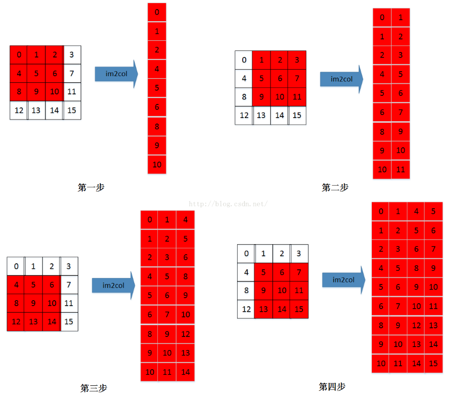
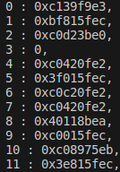

Lab4: im2col#
Goals of this lab#
Introduction#
im2col (image to column) is a technique commonly utilized in image processing and computer vision tasks, notably in the convolution operations of Convolutional Neural Networks (CNNs). The primary aim is to transform convolution operations into matrix multiplications, enabling the use of efficient matrix operation to enhance computational efficiency.
pros
significantly enhances the computational efficiency of convolution operations by utilizing efficient matrix multiplication libraries.
cons
Due to the unfolding of the input image into a matrix, introducing data duplication (especially when convolution windows overlap), the im2col method can consume substantial memory.
process#
Intended Learning Outcomes#
Understanding how to transform the original convolution into 2-D matrix operations.
Background#
Before we implement systolic array on convolution layer,we need to do transform the convolution operations matrix multiplication,because convolution operations cannot be applicable to matrix multiplication, your job in this lab is to do im2col in convolution layer for the next lab.
where to devise#
CFU-Playground/proj/"your project"/src/tensorflow/lite/kernels/internal/reference/integer_ops/conv.h
Your Assignment#
Im2Col#
Objective :
Let the convolution layer be transformed into 2D matrix operations.
Input :
Model convolution layer
Output :
2-D Matrix
Process#
First, we perform Im2col operation, followed by conventional matrix multiplication to compute ACC. This is due to the unavailability of Systolic Array in CFU-playground, which is the Lab5 assignment.
Result#
Show the results of the labels of KWS model after quantized ,and see if they match those of lab2.
Figure 1: label8